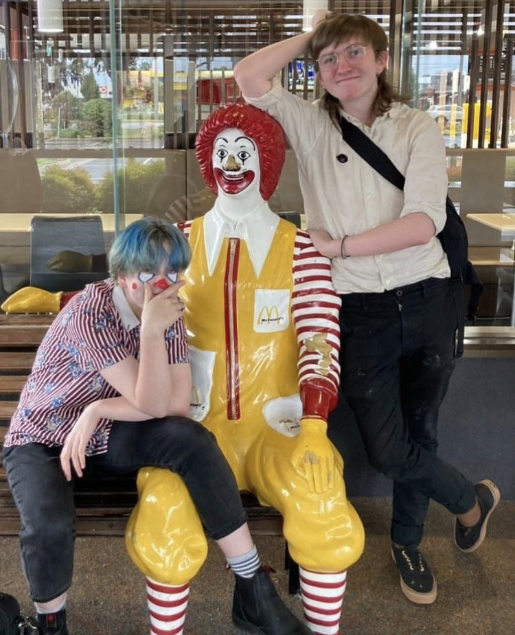
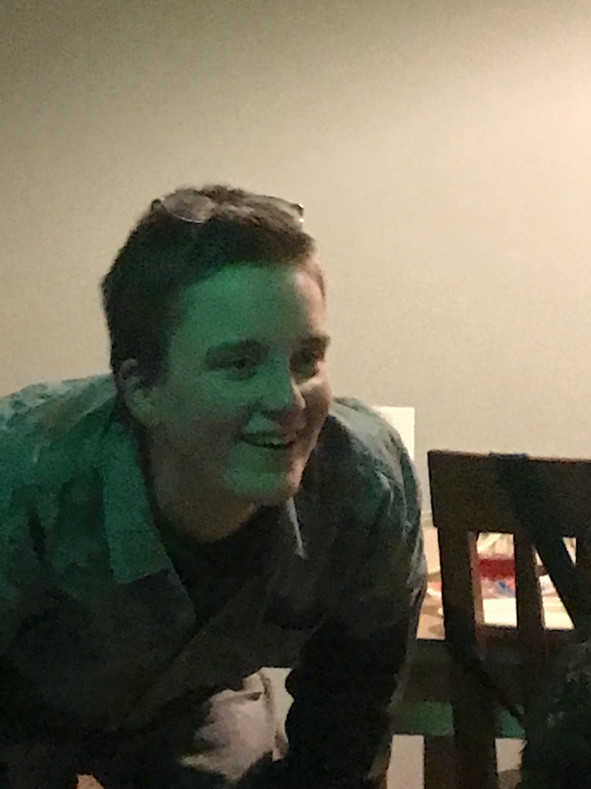

leaders
david
Pronouns: they/he
Age: 18
Position: Clown Leader: Singer and Performer
Performed in: All

The business clown, head honcho and organiser of the group.
Dean
Pronouns: he/him
Age:17
Position: Clown Leader: Pianist, Singer, Performer
Performed in: All
The meat clown, a head leader but not so responsible as well as master lyricist.

Writer for the first clown music original song.